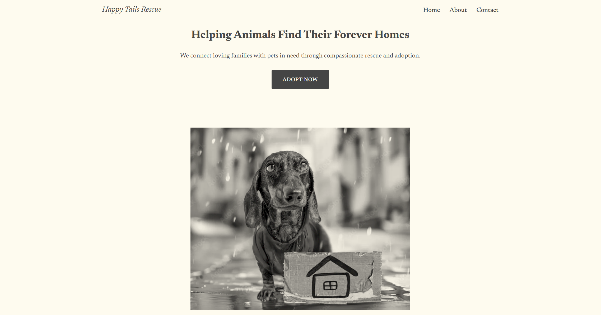
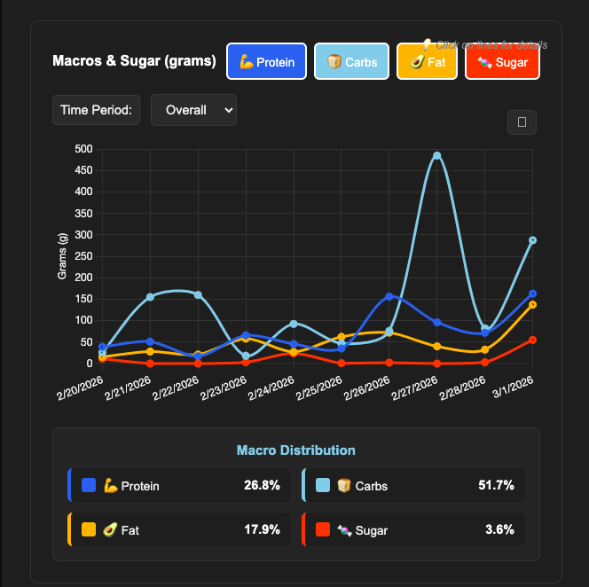
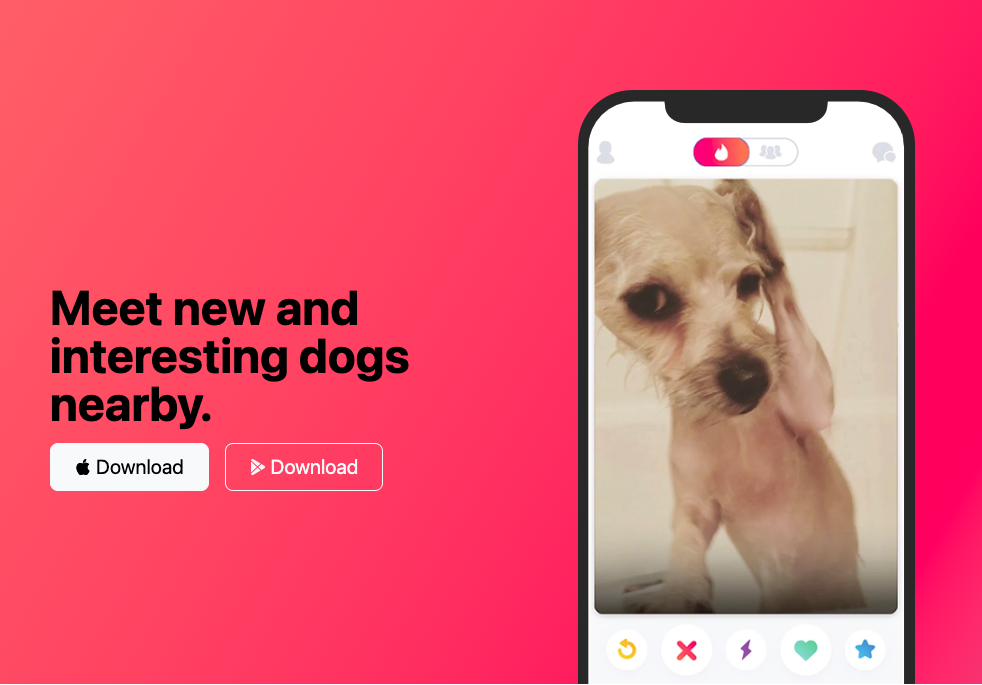

Selected Projects
A snapshot of projects that highlight my design thinking and front-end development skills.
Animal Rescue Website Redesign (WordPress)
A UX-driven redesign focused on improving usability, navigation clarity, and user engagement, based on real issues observed during my volunteer experience with an animal rescue organization.
Role: UX Designer (Concept Redesign)
Focus: UX Design, Information Architecture, Responsive Design
Context
While volunteering with an animal rescue organization, I observed usability challenges in their existing Wix website. I created a redesigned version in WordPress to explore improved solutions and demonstrate stronger UX practices.
Problem
- Navigation lacked clarity, making it difficult for users to browse adoptable pets efficiently.
- Key user actions (adopt, donate, volunteer) were not visually prioritized.
- Content lacked structure, reducing readability and user engagement.
Approach
- Evaluated usability issues based on observations from real user interactions during volunteer work.
- Reorganized site structure to improve navigation and information hierarchy.
- Applied UI/UX principles to improve layout clarity, spacing, and visual flow.
- Built a responsive redesign using WordPress to validate improvements.
Solution
- Redesigned navigation to reduce friction and improve content discoverability.
- Highlighted key user actions (adopt, donate, volunteer).
- Improved visual hierarchy to guide users through content more effectively.
Impact
- Created a more intuitive and accessible user experience aligned with user goals.
- Demonstrates ability to translate real-world UX observations into actionable design improvements.
- Showcases adaptability across platforms (Wix → WordPress) and design systems.
- This project reflects my ability to identify usability gaps and proactively design solutions that improve user engagement.

CaloriEat – Full-Stack Calorie Tracking Application
A senior capstone project focused on requirements engineering, system modeling, and full-stack web application development.
Problem
Designed and developed a calorie tracking web application that allows users to log meals, track macronutrients, record weigh-ins, set goals, and visualize progress through interactive dashboards.
My Role
- Led Project Vision development and Requirements Analysis.
- Designed Use Case, Data Flow, and State Chart diagrams.
- Developed comprehensive User Manual with full system walkthroughs.
- Defined functional and non-functional requirements.
- Contributed to backend/database structure and system testing.
- Participated in Client-Side MVC architecture design.
Process
- Performed structured requirements gathering and stakeholder analysis.
- Modeled system behavior and data flow using formal diagrams.
- Implemented features using HTML, CSS, JavaScript, and Bootstrap.
- Integrated Chart.js for progress visualization.
- Conducted iterative testing and debugging to ensure usability and functionality.
Outcome
- Delivered a fully functional calorie tracking web application.
- Successfully demonstrated SDLC principles from requirements to deployment.
- Showcased strengths in architecture design, documentation, and collaborative development.
Key Features
- Interactive dashboard for tracking calories and weight trends.
- Goal-setting system with visual progress feedback.
- Structured data flow supporting user input and analytics.

Figma UI/UX Hero Section Design
A high-fidelity hero section designed in Figma showcasing typography hierarchy, layout balance, and responsive UI principles.
Problem
Needed to strengthen my UI/UX portfolio by creating a polished, modern hero section that demonstrates visual hierarchy, spacing, and device mockup integration.
My Role
- Designed full desktop hero layout in Figma.
- Established typography scale and spacing system.
- Integrated project screenshot into device mockup.
- Applied responsive layout principles.
Process
- Defined layout structure using grid alignment and visual balance.
- Created strong headline hierarchy (64px header, proportional subheader).
- Refined spacing for clarity and readability.
- Exported high-resolution design assets for presentation.
Outcome
- Produced a clean, recruiter-ready UI hero section.
- Demonstrates UI design fundamentals and Figma proficiency.
- Strengthens portfolio toward UI/UX-focused roles.

Portfolio Website
A personal website designed to showcase my UI/UX and front-end development skills professionally.
Problem
Needed a professional platform to present my UI/UX and front-end skills to potential employers, demonstrating both design thinking and technical implementation.
My Role
- Designed overall layout, typography, and visual hierarchy.
- Built a responsive front-end using HTML, CSS, and Bootstrap 5.
- Ensured accessibility, cross-browser compatibility, and performance best practices.
Process
- Planned user journey and information hierarchy to emphasize key projects.
- Created low- and high-fidelity wireframes and interactive prototypes in Figma.
- Implemented responsive design and optimized typography, spacing, and visuals for readability.
- Tested across multiple devices and browsers to ensure usability and accessibility.
Outcome
- Launched a professional, responsive portfolio site highlighting both design and front-end skills.
- Received positive feedback from peers and mentors on usability and visual clarity.
- Demonstrates end-to-end UI/UX design and front-end development capabilities.
WoofDog – Dog Dating App
A playful concept web app connecting dog owners with like-minded dog lovers and their pets.
Problem
Many dog owners want a fun, safe way to meet other dog owners for socializing, playdates, and community events.
My Role
- Designed and implemented the front-end user interface for the web application.
- Developed interactive elements to simulate user interactions.
- Ensured responsive design and intuitive user experience across devices.
Process
- Planned user journey and UI layout for optimal clarity and engagement.
- Created mockups and high-fidelity prototypes to refine interactions.
- Implemented HTML, CSS, and JavaScript to bring the design to life.
- Tested across browsers and devices for consistency and usability.
Outcome
- Delivered a prototype front-end web app demonstrating design and coding skills.
- Provides a fun, interactive interface for dog owners to explore potential meetups.
- Highlights ability to build responsive and engaging web applications.
